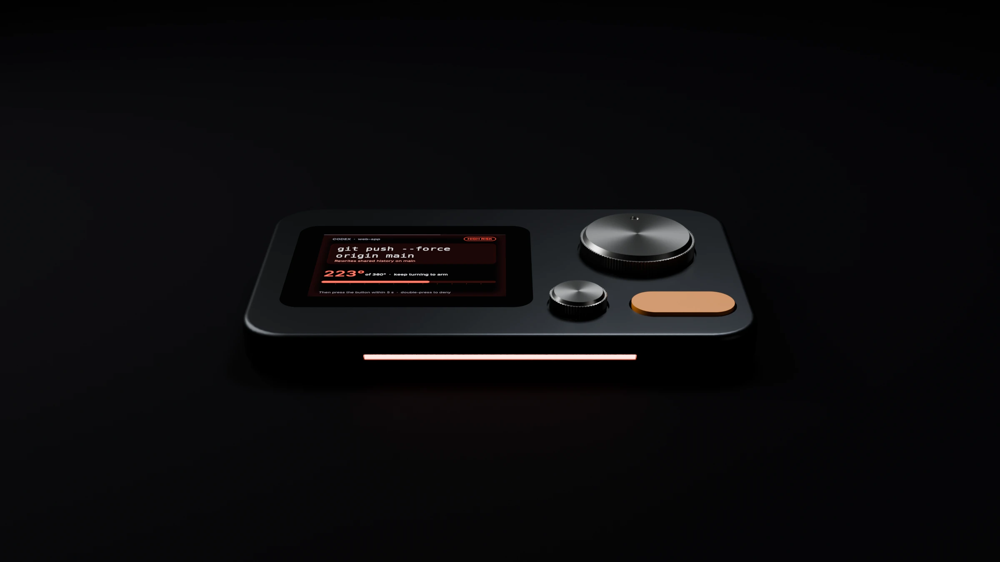
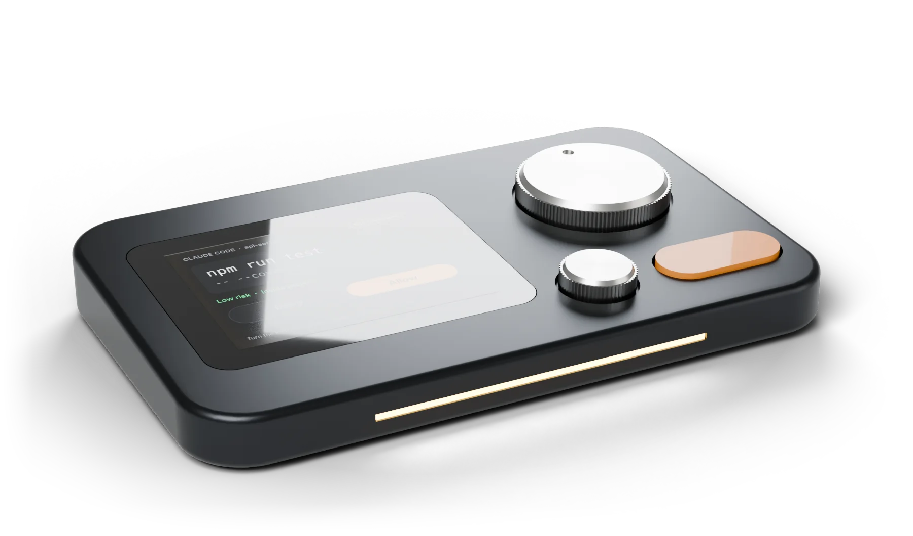
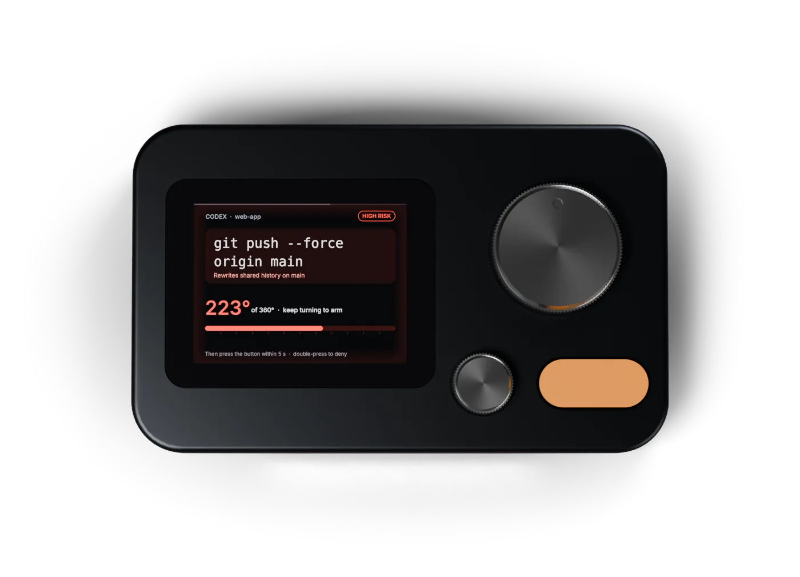

A control panel for AI agents
Read it. Turn it. Run it.
Your agents keep working. Detent asks only before the steps that can't be undone, and holding one button stops them all.
From $149 on Kickstarter · $199 after launch
Agents now run for hours, several at once. Approve every step and they crawl. Skip approvals and nobody checks the steps that can't be undone.
Detent lets the everyday work through and stops only at the few steps that matter: a force push, a deploy, a merge into main. Those take a full turn of the knob. And if anything goes wrong, hold the button for two seconds and every agent stops.
How it works
Effort that matches the risk.
Every request gets a risk tier before it reaches the screen. A force push to main is tier 2, so the button does nothing until you wind the big knob a full 360 degrees. Then you have five seconds to press.
Try it here. Drag the knob, scroll over it, or focus it and use the arrow keys. Hold the button to deny.
git push --force origin main
Rewrites shared history on main
Wind the big knob a full turn
Three tiers. Only one stops your agents.
ls git status cat README.md
Let through and counted
npm test pip install editing files in the project
Let through and counted, or one press if you want to see everything
git push --force rm -rf terraform apply writing .env
Full turn, then a press within 5 seconds
- 0.7 seconds. Presses in the first moment after a question appears are ignored, so a reflex tap never approves anything.
- Hold to deny. Holding the button refuses any request. On high-risk ones, a double press works too.
- Fails safe. If Detent is unplugged or nobody answers within 110 seconds, your agent asks on screen the way it always did.
- Stop everything. Keep holding the button for two seconds and every running agent stops at its next step.
- Approve the result. An agent can queue a finished merge or deploy and keep working. It waits on Detent and only runs once you approve it.
Agents
Works with the agents you already run.
One command connects Detent to each agent's own approval hook. Several agents can wait at once: the small knob flips between them, and the light bar shows the most urgent.
- Claude Code
- Permission requests, plus when a session starts, waits and finishes
- Codex
- Permission requests for shell commands
- Cursor
- Every shell command before it runs
- GitHub Copilot CLI, Gemini CLI, Devin
- Shell commands, file writes and tool calls before they run
- Anything else
detent ask -- git pushgates any command, a git hook included- Reviews
detent review -- gh pr merge 42queues work for you without blocking the agent
Design
Machined from one block of aluminium.
124 by 76 millimetres, 10 mm tall at the front and 14 mm at the back, so the screen leans three degrees toward you. Heavy enough to stay put when you turn the knob.


The whole command, not a coloured light.
A 2.41-inch AMOLED shows which agent is asking, in which project, and the exact command, with a plain reason when it is risky. You approve what you read.
Want more before you decide? Push the small knob for the briefing: what the action does, what it touches, why it needs a full turn, and a safer way to do it. Turn the knob to page through. It is written on your computer, from rules, so nothing leaves your machine.
Specifications
- Size
- 124 × 76 mm, 10 to 14 mm tall, top tilted 3°
- Weight
- About 300 g (target)
- Body
- 6061 aluminium, bead-blasted and anodised; steel base plate
- Display
- 2.41-inch AMOLED, 600 × 450, under flush glass
- Big knob
- 30 mm knurled steel, magnetic angle sensor, haptic detents
- Small knob
- 14 mm, 24 detents; push it for the briefing
- Button
- 25 × 11 mm, the only control that commits; hold 2 s to stop every agent
- Haptics
- Linear motor with its own pattern for each event
- Light bar
- 64 mm, 12 LEDs, four states
- Connection
- USB-C for power and data; no battery, no Wi-Fi needed
- Computer
- macOS, Windows or Linux with Python 3
- Software
- Free with every Detent; runs on your computer and listens only to your computer
Pricing
Back it early, pay less.
Detent launches on Kickstarter first. These are planned prices in US dollars. Nothing is for sale yet, and joining the waitlist costs nothing.
Add-on: knob and button set, $29. Brass, black or white, swapped in a minute.
For companies: Detent for Teams is in early testing. An admin console sets the rules once and every developer follows them. Developers approve on a Detent or with a passkey on their phone or laptop, so no hardware is required. It runs on your own server, with company sign-in (SSO), directory sync, two-person approval, signed approval records and audit reports for SOC 2, FINRA, FDA Part 11 and the EU AI Act. Join the waitlist and mention your company to try it. The software for a single Detent stays free.
Get the early‑bird price.
The waitlist hears first when the campaign opens, while the $149 spots are still there.
One last tap.
Press Submit on the form that just opened in a new tab. Then we'll write to when the campaign opens.
Changed your mind? Reply to any Detent email and you're off the list.
Questions
What happens if Detent is unplugged?
Nothing changes for your agent. If the device or its software isn't running, or nobody answers within 110 seconds, the agent shows its normal approval prompt on screen.
Can an agent approve its own request?
Not for anything that matters. Risky actions and reviews only go ahead after a physical turn and press on the device, and nothing an agent prints or sends can press the button. Everyday steps are let through so your agents keep moving; you can set Detent to ask for those too.
Does anything leave my computer?
Not for individuals. The software runs on your machine, talks to Detent over USB, and only accepts connections from your own computer. There is no account and no cloud service. Companies using Detent for Teams connect computers to their own Detent server, which they can run inside their own network.
Which agents work with it?
Claude Code, Codex, Cursor, GitHub Copilot CLI, Gemini CLI and Devin connect through their own approval hooks with one install command. Anything else, from a script to a git hook, can use detent ask.
Won't this slow my agents down?
No. By default Detent only asks before steps that can't be undone, like a force push, a deploy or a merge into main. Everything else goes straight through. Finished work can wait on Detent for review while the agent moves on.
Can I change what counts as high risk?
Yes. The tiers come from a rules file you can edit: add your own deploy command, or move a command you trust down a tier.
When does it ship?
The working prototype is being built now. A Kickstarter campaign follows once developers have used it daily. Waitlist members hear the date first.
Does Detent help with audits and AI rules?
It keeps the record auditors ask for. Every decision is saved with the person's name, the date and time, and what the decision meant, such as "approved by a person" or "blocked by a team rule". Each line is chained to the one before, so changing or removing one shows up, and the record exports as CSV or JSON. Name, time and meaning are the three details US rules for signed electronic records list (21 CFR Part 11), and holding the button to stop every agent is the kind of "stop" control the EU AI Act describes for human oversight. Detent is one control, not a certificate: whether those rules apply to you, and what else they ask for, depends on your company.
Is the software free?
Yes. The software comes free with every Detent and runs only on your computer: no account, no cloud, nothing sent anywhere. Companies can add Detent for Teams, a monthly plan per developer with company-wide rules, industry rule packs, signed approval records and a server they can run on their own network. A team lead can also approve reviews from a small second unit on their own desk.